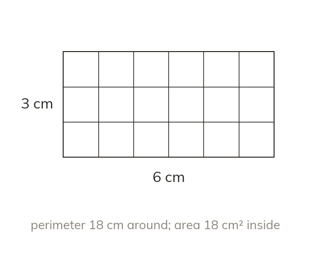

Perimeter and area, kept separate
Perimeter is the distance around a shape, in units of length. Area is the space it covers, in square units.
Perimeter is the distance around a shape, measured in units of length; area is the space a shape covers, measured in square units. The two answer different questions and are never the same kind of quantity.